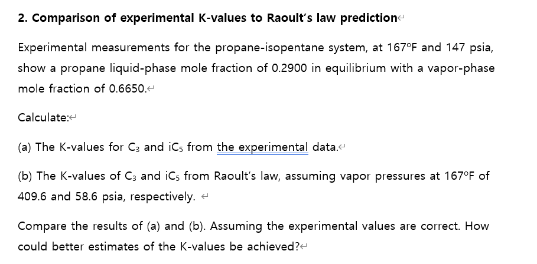
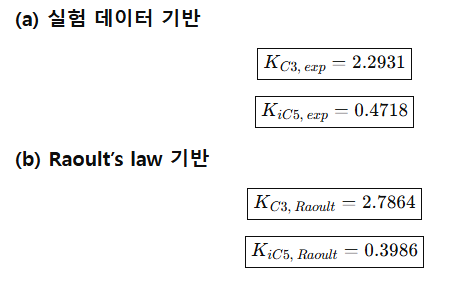
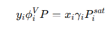
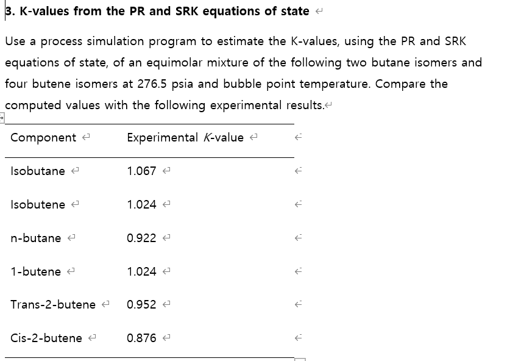
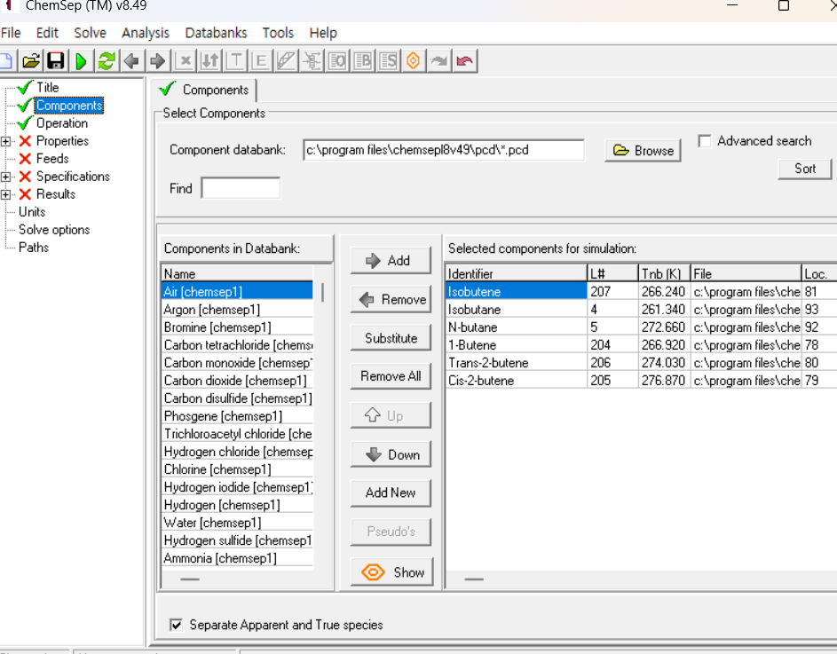
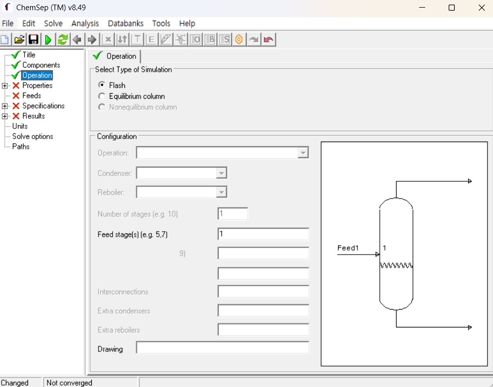
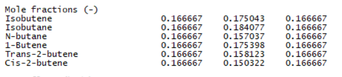
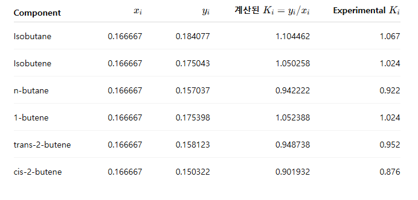
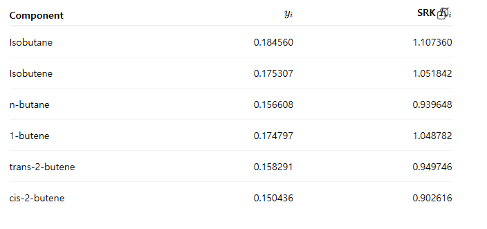

분리공정 문제 2 - 라울, EOS로 K 계산하기

프로페인-아이소 펜테인 혼합. 167F=75도 에 147 psia=1013.529kpa 이때 프로페인 액상몰분율은 0.29이다(평형 상태) 또 액상에서는 0.6650이다.
(a) 실험데이터로 K값을 구해라.
일단 지금 주어진게 K=y/x이므로 C3는 0.6650/0.2900= 2.2931 이고 C5는 0.3350/0.7100 = 0.4718이다.
(b)라울의 법칙을 이용해서 구해라.
라울의 법칙은 K=Pisat/P 이므로 409.6/147 & 58.6/147 각각 2.7864 & 0.3986
이미 차이가 크게 남을 알 수 있다.

실험 K-value vs Raoult K-value비교
| (C_3) | 2.2931 | 2.7864 | Raoult가 더 크게 예측 |
| (iC_5) | 0.4718 | 0.3986 | Raoult가 더 작게 예측 |
왜 이런 차이가 나는가? 라울의 법칙에서는 이상기체+이상용액을 가정하고 있다. 그럴려면 압력이 낮아야하는데, 여기서 압력이 147psia로 되게 높다.
보통 한 10 atm정도면 높은 압력이라고 보면 된다.
더 낫게 추정하려면? 수정된 라울의 법칙을 쓰면 좋다. 이 경우에는

이걸로 K값 구해버리거나, 또는 EOS를 이용해 퓨가시티 계수를 이용해서 구해버려도 된다. 이때 혼합된 물질이 둘다 비극성 탄화수소이기 때문에, EOS를 써도 뭐 액상에서는 문제가 없는데, 기상에서 문제가 발생하는 듯하다.

문제 해석부터 하면 시뮬레이션 프로그램을 써서 K값을 계산하는 문제인데, 계산 절차는 PR /SRK 방정식을 쓰라고 한다. 등몰 믹스처고 부테인과 부텐을 쓰는데, 이때 각각 아이소머가 존재한다. 조건은 276.5 프사이에서 버블점 온도인 상태다. 계산된 K 값을 실제 실험 결과랑 비교해라.
일단 켐셉을 썼다.

 
이제 이걸로 계산해보면

이때 비교해보면 전체적으로 맞게 나왔는데, 아이소 부테인, 아이소 부텐, n-부테인, 1-부텐, cis 부텐은 좀 크게 나왔다.
srk는 보면

이건 혼합물이 비극성이어서 EOS가 상당히 잘 맞기 떄문에 비슷한 결과가 나온다.